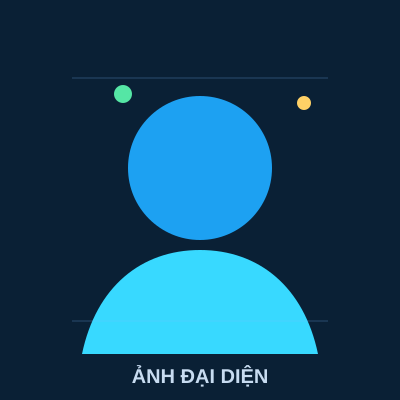

Quản lý tệp và thư mục
Trình bày cấu trúc thư mục tối ưu, quy tắc đặt tên và ảnh minh họa quá trình tổ chức dữ liệu.
- Cấu trúc thư mục logic
- Quy tắc đặt tên nhất quán
- Minh chứng bằng ảnh chụp
Portfolio dự án cá nhân
Đây là hồ sơ kỹ thuật số tổng hợp quá trình học tập, sản phẩm thực hành và những kỹ năng mình đã xây dựng trong môn Nhập môn công nghệ số và trí tuệ nhân tạo.

Sinh viên ngành Ngành học
Mục tiêu
Portfolio này được thiết kế để trình bày rõ mục tiêu học tập, quá trình thực hiện từng nhiệm vụ, sản phẩm cuối cùng và phần tự đánh giá. Các bài tập được sắp xếp theo chủ đề để người xem dễ theo dõi tiến trình phát triển kỹ năng.
Trang dự án
Mỗi bài tập được trình bày kèm mục tiêu, minh chứng và file sản phẩm đã hoàn thành.
Trình bày cấu trúc thư mục tối ưu, quy tắc đặt tên và ảnh minh họa quá trình tổ chức dữ liệu.
Trình bày kết quả tìm kiếm học thuật bằng toán tử nâng cao và đánh giá độ tin cậy của nguồn.
So sánh prompt ban đầu và prompt cải tiến, kèm kết quả đầu ra từ AI và phần rút kinh nghiệm.
Minh chứng cách dùng công cụ quản lý dự án nhóm, phân công nhiệm vụ và theo dõi tiến độ.
Trưng bày sản phẩm nội dung số được hỗ trợ bởi AI, kèm mô tả công cụ và quy trình sản xuất.
Xây dựng bộ nguyên tắc cá nhân về sử dụng AI trong học tập và nghiên cứu một cách trung thực.
Trang tổng kết
Qua quá trình làm portfolio, mình học cách hệ thống hóa sản phẩm, trình bày minh chứng rõ ràng và nhìn lại quá trình phát triển kỹ năng số của bản thân.
Mình rèn luyện khả năng tìm kiếm thông tin, viết prompt, sử dụng công cụ AI, quản lý tệp và phối hợp trực tuyến trong môi trường học tập số.
Mình sẽ tiếp tục hoàn thiện portfolio bằng các sản phẩm chất lượng hơn, đồng thời sử dụng AI như một công cụ hỗ trợ có trách nhiệm.